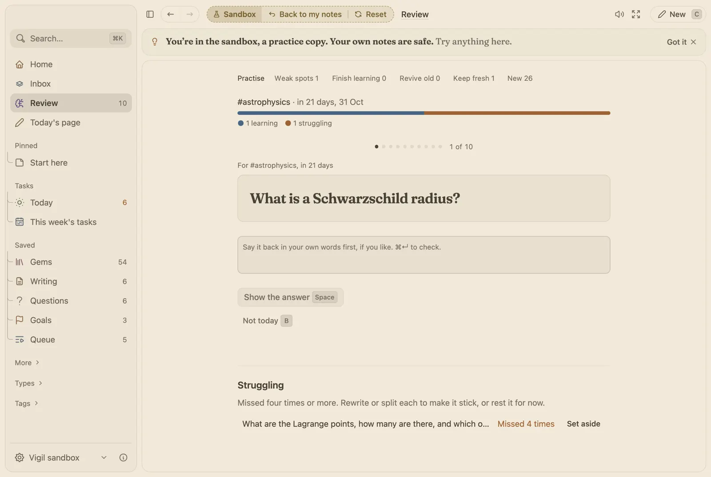
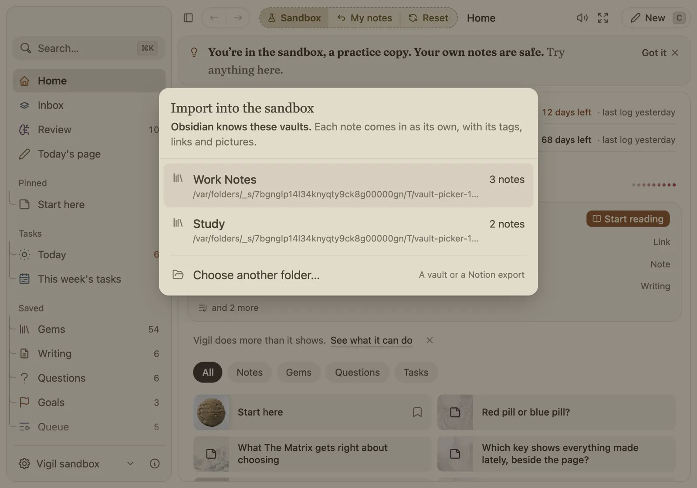

Separate books, and a peek into someone else's.
Keep work and home apart, or start a fresh book for a course. Each book is its own notebook. The sandbox is a peek into someone else's book: their reading, films, questions and goals. Try anything there; nothing you do touches your notes.

How it works
- A book is its own notebook. Switch books from the menu. Copy a note into another book and its pictures and files go with it.
- Every book is backed up. A copy of each one each day, the last 30 kept, in iCloud Drive when you have it.
- The sandbox is for trying things. It opens as someone else's book, full of what they read, watch and wonder about. Reset brings it back to how it began; your own notes are never opened by it.
- Bring a vault into any book. Import offers the Obsidian vaults on your Mac by name, with how many notes each holds.
